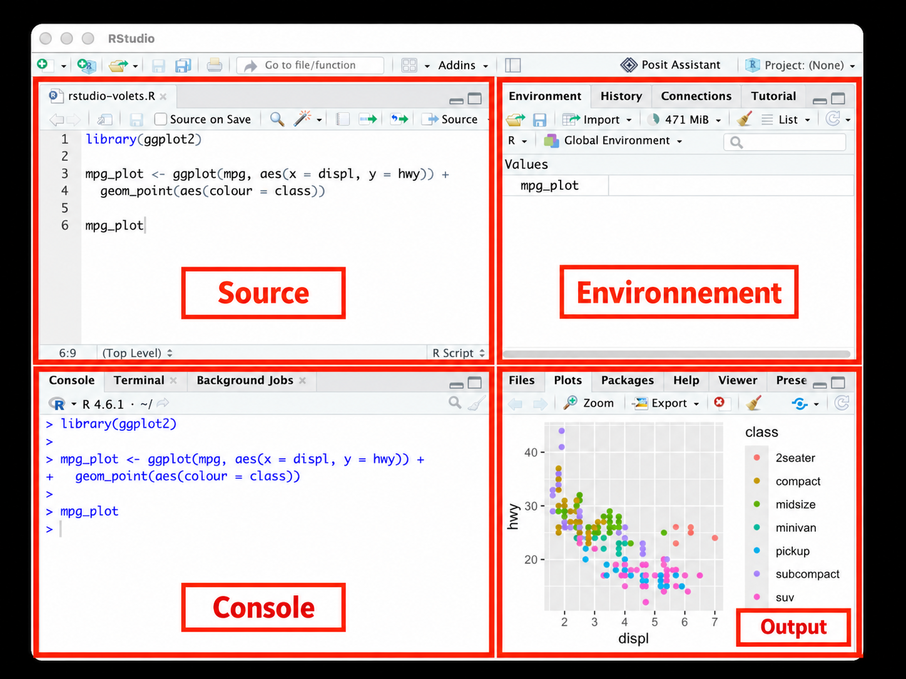

10 + 141 Premiers pas avec R
Sujet : Bienvenue, pourquoi R ? et commandes de base I
Bienvenue ! Ce premier chapitre vous guide dans vos premiers pas avec R : installer les logiciels, découvrir l’interface RStudio et écrire vos premières lignes de code.
NoteÀ noter
R est un langage de programmation et un environnement logiciel pour l’analyse statistique, la visualisation de données et le calcul scientifique. Il est largement utilisé par les statisticiens, les chercheurs en sciences des données et de plus en plus en sciences sociales y compris en sciences de la communication.
R est idéal pour la manipulation, l’analyse, la modélisation et la visualisation de données. C’est un logiciel libre et open source, ce qui signifie qu’il est gratuit à utiliser, modifier et distribuer. Il dispose d’une grande communauté d’utilisateurs et de développeurs qui contribuent à son développement et à sa maintenance.
1.1 Installer les logiciels R et RStudio
Pour utiliser R sur votre ordinateur portable, vous devez d’abord installer les deux logiciels suivants :
- le langage de programmation R (R Core Team, 2026)
- l’interface RStudio (Posit team, 2026)
Notez que nous n’écrirons le code R que dans RStudio, l’interface. Le langage de programmation R doit d’abord être installé, mais il fonctionnera ensuite en arrière-plan. Il n’est donc pas nécessaire d’ouvrir R directement sur votre ordinateur par la suite.
1.2 L’interface RStudio

Pour une présentation détaillée de l’interface, voir la documentation de Posit.
Dans RStudio, il existe quatre volets différents :
- Le volet source
- Le volet console
- Le volet environnement
- Le volet output
1.3 Exécuter un script R
Nous travaillons principalement dans le volet source, c’est là que nous écrivons notre code.
Vous pouvez ouvrir le volet source en créant un nouveau R script (cliquez sur le signe plus vert dans le coin supérieur gauche).
Vous pouvez réécrire ou copier-coller le calcul simple suivant et l’insérer dans votre script :
Une fois que nous avons écrit du code R dans le script, nous pouvons l’exécuter en le sélectionnant et en cliquant sur le bouton d’exécution situé au-dessus du volet source (le bouton d’exécution avec la flèche verte à qui montre à droite).
C’est alors dans le volet de la console où le résultat va être affiché :
[1] 24Notez que le nombre entre crochets indique la position du premier élément affiché sur cette ligne. Ici, il n’y a qu’un élément, donc [1]. Essayez 1:30 pour voir la différence.
Voici quelques autres calculs simples, suivi de leurs résultats :
1 + 2[1] 399 - 98[1] 12 * 10[1] 20100/2[1] 502^10[1] 1024
AstuceAstuce
Pour exécuter le code R plus rapidement, vous pouvez placer votre curseur sur une ligne de code à exécuter et utiliser les raccourcis clavier suivants :
Sur Windows : CTRL + Enter
Sur MacOS : Command + Enter
1.4 Commenter votre code avec un #
C’est une bonne pratique de commenter son code R. Les commentaires expliquent ce que le code fait et facilite l’utilisation ultérieure et aussi le partage de code entre personnes (qui ne savent peut-être pas ce que vous vouliez faire avec votre code).
On commente en ajoutant un symbole # au début de la ligne de code, comme ceci :
# Ceci est un commentaire, et R l'ignorera lors de
# l'exécution du script.1.5 L’opérateur d’affectation <-
L’opérateur d’affectation <- est un opérateur clé de la programmation R. Il permet d’attribuer des valeurs aux variables.
# Par exemple, nous pouvons attribuer la valeur 5 à la
# variable x :
x <- 5Si vous exécutez ce code, une nouvelle variable, x, sera créée dans le volet environnement en haut à droite de RStudio.
NoteÀ noter
En R, tout ce que l’on manipule (une valeur, un vecteur, un tableau, une fonction) est un objet qui porte un nom. On parle aussi de structures de données. Les variables à un élément sont des objets très simples. Au cours de ce cours, nous découvrirons d’autres types d’objets.
AstuceAstuce
Vous pouvez créer l’opérateur d’affectation <- avec les raccourcis clavier suivants :
Sur Windows : Alt + -
Sur MacOS : Option + -
1.6 Variables à élément unique
Vous pouvez imprimer (afficher) la valeur d’une variable que vous avez créée, telle que x, en tapant le nom de la variable et en l’exécutant.
x[1] 5
ImportantImportant
- Veillez toujours à exécuter votre code pour créer des variables avant de les utiliser pour d’autres opérations. Si vous oubliez de créer les variables en premier, vous obtiendrez une erreur comme résultat.
Par exemple, essayez d’exécuter ce qui suit : y + z
Pourquoi cela crée une erreur ? Réponse : les variables y et z n’ont pas encore été définies !
Pour éliminer l’erreur, nous devons donc définir y et z.
y <- 7
z <- 3
# Essayons encore une fois :
y + z[1] 10Maintenant ça marche ! 😀
ImportantImportant
- Sachez aussi que si vous attribuez une nouvelle valeur à une variable existante, l’ancienne valeur sera écrasée !
# Notez que si vous exécutez toutes les lignes de code
# suivantes, la variable x se voit attribuer la dernière
# valeur exécutée : 4. Les valeurs 5 et 100 sont ecrasées
# lors de l'exécution du code.
x <- 5
x <- 100
x <- 4
x[1] 4Les différents types de variable : numériques, textuelles et logique
Jusqu’à présent, nous avons créé des variables de type numérique, telles que x (valeur = 5).
Cependant, ce n’est pas le seul type de variable dans R.
NoteÀ noter
Dans R, il existe différents types de variables :
les variables numériques
les variables textuelles, également appelées character strings (chaînes de caractères).
les variables logiques avec les valeurs TRUE et FALSE (VRAI et FAUX)
# Regardons quelques exemples avec du code ! (faut tout
# exécuter !)
# variables numériques :
a <- 100
b <- 77
age <- 21
Insta_likes <- 1539
# variables textuelles (toujours ajouter des guillemets !)
c <- "chien"
d <- "chat"
Comm_TikTok <- "wsh"
Moliere <- "il n’est rien d’égal au tabac : c’est la passion des honnêtes gens"
# variables logiques :
e <- TRUE
f <- FALSELes variables logiques peuvent être utiles quand vous travaillez avec des catégories binaires.
Par exemple : il est souvent utile de classer les personnes ayant répondu à un questionnaire en catégories binaires, telles que :
homme/femme
mineur/majeur
conservateur/libéral
etc.
# Si Marc était mineur et Claire majeure, nous les
# classerions comme suit :
Marc <- FALSE
Claire <- TRUE
# Dans cet exemple, la variable logique indique si une
# personne est majeure (TRUE) ou pas (FALSE)1.7 Variables à plusieurs éléments : vecteurs
Les vecteurs constituent un autre type de variable (ou type d’objet) essentiel dans la programmation R. Il s’agit de variables comportant plusieurs éléments.
Vous pouvez créer des vecteurs avec l’opérateur d’affectation <- et la fonction de concatenation c().
# Voici quelques exemples avec du code ! (faut tout
# exécuter !)
# un vecteur numérique (notez qu'il faut toujours séparer
# les valeurs avec des virgules)
v1 <- c(1, 2, 3)- Vous pouvez afficher la valeur de
v1en tapant son nom et l’exécutant
v1[1] 1 2 3
NoteÀ noter
En R, une fonction est un morceau de code conçu pour effectuer une tâche spécifique, souvent avec des paramètres variables. Ces paramètres d’entrée sont également appelés les arguments de la fonction.
Prenons l’exemple de la fonction c() qui crée des vecteurs :
les arguments de cette fonction doivent être insérés entre les parenthèses sous la forme de valeurs séparées par des virgules (pour chaque élément du vecteur).
Un vecteur à deux éléments :
c(2, 4)Un vecteur à trois éléments :
c(3, 6, 9)
Maintenant, regardons encore quelques exemples de vecteurs de différents types :
# vecteurs numériques
w <- c(-10, 100, 4, -88)
likes_comments_shares <- c(513, 34, 102)
# vecteurs textuels (toujours ajouter des guillemets pour
# chaque élément !)
animaux <- c("chat", "chien", "cheval", "chenille")
Comm_Insta <- c("trop cool", "wsh", "c'est quoi ?")
humains <- c("Claire", "Clarissa", "Theresa", "Marc", "Alma")
# vecteurs logiques :
femme <- c(TRUE, TRUE, TRUE, FALSE, TRUE)
Mise en gardeAttention
Un vecteur ne contient qu’un seul type de données. Si l’on mélange des types, R les convertit sans prévenir vers le type le plus général (logique → numérique → texte) : c(1, "a", TRUE) donne "1" "a" "TRUE".
À faire avant de continuer
Si ce n’est pas encore fait : Installez R et RStudio sur votre ordinateur.
Lisez ensuite encore une fois ce script et exécutez toutes les sections de code sur votre ordinateur.
Essayez de résoudre vous-même les éventuels messages d’erreur en adaptant le code.
Exercices
Choisissez Vrai ou Faux, cochez une réponse ou tapez un nombre : la couleur indique tout de suite si votre réponse est correcte. Cliquez sur Explication pour voir la correction.
Question 1.1
La fonction class() appliquée à une variable à un élément peut donner comme résultat :
"numeric""logical""character"6
class() renvoie toujours un texte décrivant la classe de l’objet, p. ex. class(5) → "numeric", class(TRUE) → "logical", class("a") → "character". Elle ne renvoie jamais un nombre comme 6.
Question 1.2
Exécutez le code R suivant et jugez chaque proposition :
number <- "7"Le code
number^2donne 36 comme résultat dans la console.Le code
number <- as.numeric(number)ne change rien à ma variable.numberpeut être utilisé dans la fonctionc()afin de créer un vecteur.length(number)donne une erreur.Le code
as.numeric(number)^2donne 36 comme résultat dans la console.
number contient le texte "7".
a) Un calcul sur du texte produit une erreur.
b) as.numeric() transforme le texte en nombre : la classe de number change.
c) c(number, "8") crée un vecteur textuel.
d) length(number) renvoie 1.
e) as.numeric(number)^2 vaut 49, pas 36.
Question 1.3
Exécutez le code suivant et jugez chaque proposition :
n <- "079 123 45 67"
print(n)
class(n)Le code crée un objet numérique avec 10 éléments.
nest une variable de type textuel.nest une variable avec un élément.Si l’on a créé correctement
ncomme décrit ci-dessus et que l’on exécuten * 2, on obtient un message d’erreur.Dans R, il n’est jamais utile de stocker des numéros sous forme de texte.
Les guillemets font de n une chaîne de caractères à un élément. Une opération arithmétique sur du texte (n * 2) produit une erreur.
e) Stocker des numéros de téléphone, codes postaux ou identifiants en texte est souvent utile : on ne calcule pas avec eux, et les zéros initiaux sont conservés.
Question 1.4
Exécutez le code suivant et jugez chaque proposition :
a <- 66
a <- 77
a <- 88Ce code génère une variable,
a, dont la valeur finale correspond à 88.Le code écrase deux fois la variable
a.Le code génère une erreur, car il ne peut pas créer trois variables portant exactement le même nom.
Le code crée trois variables, toutes nommées
a, et les stocke simultanément dans l’environnement.
Chaque nouvelle affectation remplace l’ancienne valeur : il n’existe qu’un seul objet a, qui vaut 88 à la fin. R ne produit pas d’erreur lorsqu’on réutilise un nom.
Question 1.5
Exécutez le code R suivant et jugez chaque proposition :
a <- c(0:15)
print(a)print(a)est une fonction qui affiche l’objetadans la console.Au lieu d’utiliser
print(a), on pourrait simplement afficher l’objetaen exécutant son noma.La fonction
print()dans R sert à imprimer le code R sur papier avec l’imprimante.Dans cet exemple de code,
aest une fonction R.Dans cet exemple de code, un vecteur nommé
cest créé.
print(a) affiche le contenu de l’objet a dans la console. En session interactive, taper simplement a a le même effet. a est un vecteur (pas une fonction), et c() est la fonction de concaténation qui le crée : aucun objet nommé c n’est créé.
Question 1.6
Exécutez le code R suivant et jugez chaque proposition :
a <- c(1, 22, 8, -5)
print(a)
class(a)aest un vecteur.aest un objet R de type numérique.Le code crée un objet dans le volet Environment de RStudio.
Le code utilise la fonction de concaténation
c().
Toutes les propositions sont correctes : c() crée un vecteur numérique (class(a) renvoie "numeric"), et l’affectation <- le place dans l’environnement.
Question 1.7
Le code R suivant ouvre une page d’aide dans RStudio lorsqu’il est exécuté :
?typeof()Le point d’interrogation ouvre l’aide de la fonction qui suit, avec ou sans parenthèses : ?typeof et ?typeof() affichent la même page. help(typeof) fait de même.
Question 1.8
Dans R, la fonction c() peut être utilisée pour concaténer des éléments afin de créer des vecteurs.
c() (pour combine / concaténer) assemble ses arguments en un vecteur.
Question 1.9
Le # permet d’insérer des commentaires dans le script, sans que cela ait des conséquences sur mon codage.
Tout ce qui suit # sur une ligne est ignoré par R lors de l’exécution.
Question 1.10
Le code suivant crée une variable textuelle lorsqu’il est exécuté :
monstre <- "vampire"Les guillemets font de "vampire" une chaîne de caractères : class(monstre) renvoie "character".
Question 1.11
Les deux lignes de code suivantes créent exactement la même variable lorsqu’elles sont exécutées :
a <- "Université de Fribourg"
a = "Université de Fribourg"Pour une affectation, = et <- sont équivalents. Par convention, on utilise <- pour les affectations et on réserve = aux arguments des fonctions.
Question 1.12
Dans R, l’opérateur d’affectation (<-) peut être utilisé pour créer des objets, tels que des variables à un élément, des vecteurs, des matrices et des data frames.
<- assigne n’importe quel objet R à un nom : scalaire, vecteur, matrice, data frame, liste, etc.
Question 1.13
Dans quel volet de RStudio écrivez-vous et enregistrez-vous votre script R ?
Le script s’écrit et s’enregistre dans le volet Source (en haut à gauche) ; la console affiche le code exécuté et les résultats.
Question 1.14
En général, la syntaxe des commandes R n’est pas sensible à la casse, c’est-à-dire aux lettres majuscules et minuscules.
R est sensible à la casse : Mean(x) produit une erreur alors que mean(x) fonctionne, et a et A sont deux objets différents.
Question 1.15
Le logiciel RStudio, comme R, est un langage de programmation open source.
R est le langage de programmation. RStudio est un environnement de développement intégré (IDE) qui facilite le travail avec R, mais n’est pas un langage en soi.
Question 1.16
RStudio Desktop est un logiciel, dit environnement de développement, qui offre une interface utilisateur graphique permettant d’utiliser R, un langage de programmation.
RStudio est un IDE : il réunit éditeur de script, console, environnement et fenêtre de graphiques. R tourne en arrière-plan.
Question 1.17
Le code R suivant crée un vecteur avec 10 éléments numériques lorsqu’il est exécuté :
n <- "079 123 45 67"Les guillemets créent un seul élément de type texte : length(n) vaut 1 et class(n) renvoie "character".